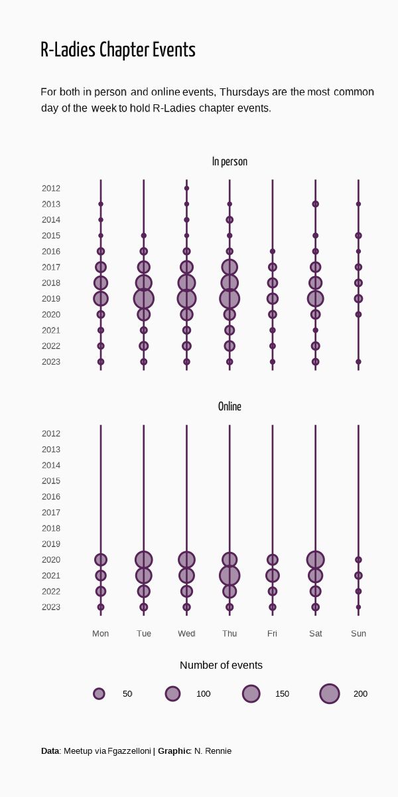

Discover tips and tricks from R experts David Keyes and Nicola Rennie that make creating and viewing your visualizations easier and more enjoyable!
Introduction
I recently had the pleasure of meeting David Keyes at the Cascadia R Conference and discovered that his platform, R for the Rest of Us, has a YouTube channel. As a participant of #TidyTuesday, I have been following Nicola Rennie’s visualizations for over a year. So I was excited to see Nicola Rennie Explains How to Make Data Visualizations for Mobile in R and the code rfortherestofus-mobile-data-viz. Below are some of the things I learned from this video, which are going to hopefully make creating these visuals much easier and a little less painful.
Notes
Sketch out data visual before creating it.
Creating data visuals for mobile forces you to strip down and think about the most important thing to show.
Filter out what is not important vs. what is needed in a visualization.
Plot 1
ggtext package
Add icons into plots.
element_textbox_simple() : The theme elements element_textbox() and element_textbox_simple() enable Markdown text in a box, with word wrap.
Use html and markdown text.
Change the color of text.
Show code
# Load packages -----------------------------------------------------------library(tidyverse)library(showtext)library(ggtext)# Load data ---------------------------------------------------------------tuesdata <- tidytuesdayR::tt_load("2023-11-21")rladies_chapters <- tuesdata$rladies_chapters# Load fonts --------------------------------------------------------------font_add_google("Yanone Kaffeesatz", "yanone")showtext_auto()# Define colours and fonts-------------------------------------------------bg_col <-"grey98"text_col <-"grey5"highlight_col <-"#562457"title_font <-"yanone"# Define text -------------------------------------------------------------title <-"R-Ladies Chapter Events"st <-"For both in person and online events, Thursdays are the most common day of the week to hold R-Ladies chapter events."cap <-"**Data**: Meetup via Fgazzelloni | **Graphic**: N. Rennie"# Data wrangling ----------------------------------------------------------plot_data <- rladies_chapters |>select(date, location, year) |>mutate(date = lubridate::wday(date, label =TRUE, week_start =1)) |>count(date, location, year) |>mutate(location =case_when( location =="inperson"~"In person", location =="online"~"Online" ))# Plot --------------------------------------------------------------------ggplot(data = plot_data) +geom_point(mapping =aes(x = date, y = year, size = n),colour = highlight_col,fill =alpha(highlight_col, 0.5),pch =21 ) +facet_wrap(~location) +scale_y_reverse(breaks =min(plot_data$year):max(plot_data$year)) +labs(title = title,subtitle = st,caption = cap ) +theme_minimal(base_size =24) +theme(plot.margin =margin(5, 5, 5, 15),plot.background =element_rect(fill = bg_col, colour = bg_col),panel.background =element_rect(fill = bg_col, colour = bg_col),panel.grid.major.y =element_blank(),panel.grid.minor.y =element_blank(),panel.grid.major.x =element_line(colour = highlight_col,linewidth =0.3 ),strip.text =element_text(family = title_font,size =rel(1.2) ),axis.title =element_blank(),plot.title =element_textbox_simple(colour = text_col,size =rel(2),margin =margin(b =10, t =10),lineheight =0.5,family = title_font ),plot.subtitle =element_textbox_simple(colour = text_col,margin =margin(b =10, t =0),lineheight =0.5 ),plot.caption =element_textbox_simple(colour = text_col,margin =margin(b =10, t =5),lineheight =0.5 ),plot.title.position ="plot",plot.caption.position ="plot" )
Plot 2
camcorder Package
gg_record(): Overrides the print methods for ggplot and patchwork objects from the ‘ggplot2’ and ‘patchwork’ packages respectively.
Example: theme_minimal(base_size = 12) means that we have reduced the original size from 24 to 12.
size = rel(2) implies that the title will be size 24 =12*2.
Show code
# Plot --------------------------------------------------------------------ggplot(data = plot_data) +geom_point(mapping =aes(x = date, y = year, size = n),colour = highlight_col,fill =alpha(highlight_col, 0.5),pch =21 ) +# change facet to one columnfacet_wrap(~location, ncol =1) +# adjust the size of the circles by setting min and max sizescale_y_reverse(breaks =min(plot_data$year):max(plot_data$year)) +# standard maximum size is 6scale_size_area(max_size =3) +guides(size =guide_legend(title.position ="top",title.hjust =0.5,title ="Number of events") ) +labs(title = title,subtitle = st,caption = cap ) +theme_minimal(base_size =12) +theme(plot.margin =margin(5, 5, 5, 15),plot.background =element_rect(fill = bg_col, colour = bg_col),panel.background =element_rect(fill = bg_col, colour = bg_col),panel.grid.major.y =element_blank(),panel.grid.minor.y =element_blank(),panel.grid.major.x =element_line(colour = highlight_col,linewidth =0.3 ),strip.text =element_text(family = title_font,size =rel(1.2) ),axis.title =element_blank(),plot.title =element_textbox_simple(colour = text_col,size =rel(2),margin =margin(b =10, t =10),lineheight =0.5,family = title_font ),plot.subtitle =element_textbox_simple(colour = text_col,margin =margin(b =10, t =0),lineheight =0.5 ),plot.caption =element_textbox_simple(colour = text_col,margin =margin(b =10, t =5),lineheight =0.5 ),plot.title.position ="plot",plot.caption.position ="plot",# legend optionslegend.position ="bottom",legend.justification.bottom ="right",legend.text =element_text(margin =margin(l =0)),legend.title =element_text(margin =margin(t =-10) ) )

Source Code
---title: "R for the Rest of Us: Nicola Rennie Explains How to Make Data Visualizations for Mobile in R"date: "2024-07-01"categories: ["R for the Rest of Us","R", "Data Visuals", "#TidyTuesday"]toc: truedraft: falsewarning: falseeval: falseformat: html: code-fold: true code-summary: "Show code" code-tools: true code-copy: true---Discover tips and tricks from R experts David Keyes and Nicola Rennie that make creating and viewing your visualizations easier and more enjoyable!# IntroductionI recently had the pleasure of meeting David Keyes at the Cascadia R Conference and discovered that his platform, R for the Rest of Us, has a [YouTube channel](https://www.youtube.com/channel/UCSoUNu8x-HblqqOK_EwdZGw). As a participant of [#TidyTuesday](https://github.com/rfordatascience/tidytuesday), I have been following Nicola Rennie's visualizations for over a year. So I was excited to see [Nicola Rennie Explains How to Make Data Visualizations for Mobile in R](https://www.youtube.com/watch?v=Ys_Ysxh8Cgs&list=PLRf78CMfYKn4zKTiKP2cw9UYZLq6lIkXz&index=3) and the code [rfortherestofus-mobile-data-viz](https://github.com/nrennie/rfortherestofus-mobile-data-viz/tree/main). Below are some of the things I learned from this video, which are going to hopefully make creating these visuals much easier and a little less painful.# Notes* Sketch out data visual before creating it. * Creating data visuals for mobile forces you to strip down and think about the most important thing to show. * Filter out what is not important vs. what is needed in a visualization. # Plot 1### ggtext package* Add icons into plots.* `element_textbox_simple()` : The theme elements element_textbox() and element_textbox_simple() enable Markdown text in a box, with word wrap.* Use html and markdown text.* Change the color of text. ```{r}# Load packages -----------------------------------------------------------library(tidyverse)library(showtext)library(ggtext)# Load data ---------------------------------------------------------------tuesdata <- tidytuesdayR::tt_load("2023-11-21")rladies_chapters <- tuesdata$rladies_chapters# Load fonts --------------------------------------------------------------font_add_google("Yanone Kaffeesatz", "yanone")showtext_auto()# Define colours and fonts-------------------------------------------------bg_col <-"grey98"text_col <-"grey5"highlight_col <-"#562457"title_font <-"yanone"# Define text -------------------------------------------------------------title <-"R-Ladies Chapter Events"st <-"For both in person and online events, Thursdays are the most common day of the week to hold R-Ladies chapter events."cap <-"**Data**: Meetup via Fgazzelloni | **Graphic**: N. Rennie"# Data wrangling ----------------------------------------------------------plot_data <- rladies_chapters |>select(date, location, year) |>mutate(date = lubridate::wday(date, label =TRUE, week_start =1)) |>count(date, location, year) |>mutate(location =case_when( location =="inperson"~"In person", location =="online"~"Online" ))# Plot --------------------------------------------------------------------ggplot(data = plot_data) +geom_point(mapping =aes(x = date, y = year, size = n),colour = highlight_col,fill =alpha(highlight_col, 0.5),pch =21 ) +facet_wrap(~location) +scale_y_reverse(breaks =min(plot_data$year):max(plot_data$year)) +labs(title = title,subtitle = st,caption = cap ) +theme_minimal(base_size =24) +theme(plot.margin =margin(5, 5, 5, 15),plot.background =element_rect(fill = bg_col, colour = bg_col),panel.background =element_rect(fill = bg_col, colour = bg_col),panel.grid.major.y =element_blank(),panel.grid.minor.y =element_blank(),panel.grid.major.x =element_line(colour = highlight_col,linewidth =0.3 ),strip.text =element_text(family = title_font,size =rel(1.2) ),axis.title =element_blank(),plot.title =element_textbox_simple(colour = text_col,size =rel(2),margin =margin(b =10, t =10),lineheight =0.5,family = title_font ),plot.subtitle =element_textbox_simple(colour = text_col,margin =margin(b =10, t =0),lineheight =0.5 ),plot.caption =element_textbox_simple(colour = text_col,margin =margin(b =10, t =5),lineheight =0.5 ),plot.title.position ="plot",plot.caption.position ="plot" )```# Plot 2### camcorder Package* `gg_record()`: Overrides the print methods for ggplot and patchwork objects from the 'ggplot2' and 'patchwork' packages respectively. * Various outputs. * Adjust width and height * Set DPI```{r}# Start recording ---------------------------------------------------------library(camcorder)gg_record(dir ="recording",device ="png",width =2,height =4,units ="in",dpi =300)# Plot --------------------------------------------------------------------ggplot(data = plot_data) +geom_point(mapping =aes(x = date, y = year, size = n),colour = highlight_col,fill =alpha(highlight_col, 0.5),pch =21 ) +facet_wrap(~location, ncol =2) +scale_y_reverse(breaks =min(plot_data$year):max(plot_data$year)) +scale_size_area(max_size =3) +guides(size =guide_legend(title.position ="top",title.hjust =0.5,title ="Number of events") ) +labs(title = title,subtitle = st,caption = cap ) +theme_minimal(base_size =12) +theme(plot.margin =margin(5, 5, 5, 15),plot.background =element_rect(fill = bg_col, colour = bg_col),panel.background =element_rect(fill = bg_col, colour = bg_col),panel.grid.major.y =element_blank(),panel.grid.minor.y =element_blank(),panel.grid.major.x =element_line(colour = highlight_col,linewidth =0.3 ),strip.text =element_text(family = title_font,size =rel(1.2) ),axis.title =element_blank(),plot.title =element_textbox_simple(colour = text_col,size =rel(2),margin =margin(b =10, t =10),lineheight =0.5,family = title_font ),plot.subtitle =element_textbox_simple(colour = text_col,margin =margin(b =10, t =0),lineheight =0.5 ),plot.caption =element_textbox_simple(colour = text_col,margin =margin(b =10, t =5),lineheight =0.5 ),plot.title.position ="plot",plot.caption.position ="plot",legend.position ="bottom",legend.justification.bottom ="right" )```# Plot 3* Set the `base_size` and then use relative sizing. * Example: `theme_minimal(base_size = 12)` means that we have reduced the original size from 24 to 12. * `size = rel(2)` implies that the title will be size 24 =12*2. ```{r}# Plot --------------------------------------------------------------------ggplot(data = plot_data) +geom_point(mapping =aes(x = date, y = year, size = n),colour = highlight_col,fill =alpha(highlight_col, 0.5),pch =21 ) +# change facet to one columnfacet_wrap(~location, ncol =1) +# adjust the size of the circles by setting min and max sizescale_y_reverse(breaks =min(plot_data$year):max(plot_data$year)) +# standard maximum size is 6scale_size_area(max_size =3) +guides(size =guide_legend(title.position ="top",title.hjust =0.5,title ="Number of events") ) +labs(title = title,subtitle = st,caption = cap ) +theme_minimal(base_size =12) +theme(plot.margin =margin(5, 5, 5, 15),plot.background =element_rect(fill = bg_col, colour = bg_col),panel.background =element_rect(fill = bg_col, colour = bg_col),panel.grid.major.y =element_blank(),panel.grid.minor.y =element_blank(),panel.grid.major.x =element_line(colour = highlight_col,linewidth =0.3 ),strip.text =element_text(family = title_font,size =rel(1.2) ),axis.title =element_blank(),plot.title =element_textbox_simple(colour = text_col,size =rel(2),margin =margin(b =10, t =10),lineheight =0.5,family = title_font ),plot.subtitle =element_textbox_simple(colour = text_col,margin =margin(b =10, t =0),lineheight =0.5 ),plot.caption =element_textbox_simple(colour = text_col,margin =margin(b =10, t =5),lineheight =0.5 ),plot.title.position ="plot",plot.caption.position ="plot",# legend optionslegend.position ="bottom",legend.justification.bottom ="right",legend.text =element_text(margin =margin(l =0)),legend.title =element_text(margin =margin(t =-10) ) )```